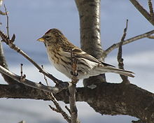

| Redpolls | |
|---|---|
|  | |
| Common Redpoll in Oulu, Finland | |
| Species | |
|
Carduelis flammea |
The Redpolls are a group of small passerine birds in the finch family Fringillidae which have characteristic red markings on their heads. They were formerly placed into the genus Acanthis together with the linnets and the twite, but their closest relatives are actually the crossbills, that are placed in the genus Loxia.[1] The latter genus could be merged with Carduelis in a single genus, for which the name Loxia would then have priority. But this would imply to change the name of a large number of species, and as their adaptations and biogeography are evolutionarily quite peculiar, it would be better to reinstate Acanthis instead, including only the redpolls. There are several different very closely related[2] forms of redpolls which could be considered as anything from one to five species.[3] Recent studies[4][5] tend to support three species, but this is certainly not definite.
All redpolls are northern breeding woodland species, associated with birch trees. They are small birds, brown or grey-brown above and with a red forehead patch. The adult male's breast is washed in red, but in females and young birds the buff breast and white belly are streaked with brown. The bill is small and yellow. Some birds, particularly young ones, are difficult to assign to species.
They are primarily seed-eaters, and often feed acrobatically like a tit; their diet may include some insects in summer. They have a dry reeling song and a metallic call. They lay 4–7 eggs in a nest in a tree or, in the case of the Arctic Redpoll, a large bush. They can form large flocks outside the breeding season, sometimes mixed with other finches.
The species are:
{kind=link}